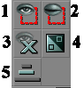

Toolbox
The toolbox is on the left-hand side of the UnrealEd Interface.
In UnrealEd 2 and newer versions, the toolbox is divided into groups, each of which can be collapsed down. It is scrollable, but in UnrealEd 3 the scrollbar is very narrow and is easily missed.
1 Modes
![[interface.toolbox.modes]](images/interface-toolbox-modes.png) |
These are "tools" in the classic sense: they alter the behaviour of the mouse cursor. The modes group:
There are also several modes that do not have toolbox icons, due to being experimental or buggy. See binding editor commands for how to access them more easily.
|
![[button.mode.camera]](images/button-mode-camera.gif)
![[button.mode.vertex]](images/button-mode-vertex.gif)
![[button.mode.scale]](images/button-mode-scale.gif)
![[button.mode.rotate]](images/button-mode-rotate.gif)
![[button.mode.texpan]](images/button-mode-texpan.gif)
![[button.mode.clip]](images/button-mode-clip.gif)
2 Brush Clipping Group
![[interface.toolbox.brushGlipGr]](images/interface-toolbox-brushglipg.gif) |
These are commands that work with brush clipping mode. |
3 Brushbuilders Group
![[interface.toolbox.defbuilders]](images/interface-toolbox-defbuilder.gif) |
The Brushbuilders forge the red builder brush into a new shape. For a tutorial on how to use these, see Subtract A Space. |
4 Brush Operations Group
![[interface.toolbox.BrushOperations]](images/interface-toolbox-brushopera.png) |
These are commands that modify the map architecture:
|
5 Visibility Group

|
Hides and shows actors. more.... Hiding Actors |
6 Custom Group
Contains buttons which are defined by the user. See Custom Toolbox Buttons.
Related Topics
See also...
- UnrealEd interface for information on other parts of the UnrealEd window.
- Brush and Subtraction And Addition for Add/Remove Brush reference
- Invisible Collision Hull and zone portal for Add Special Brush Reference.